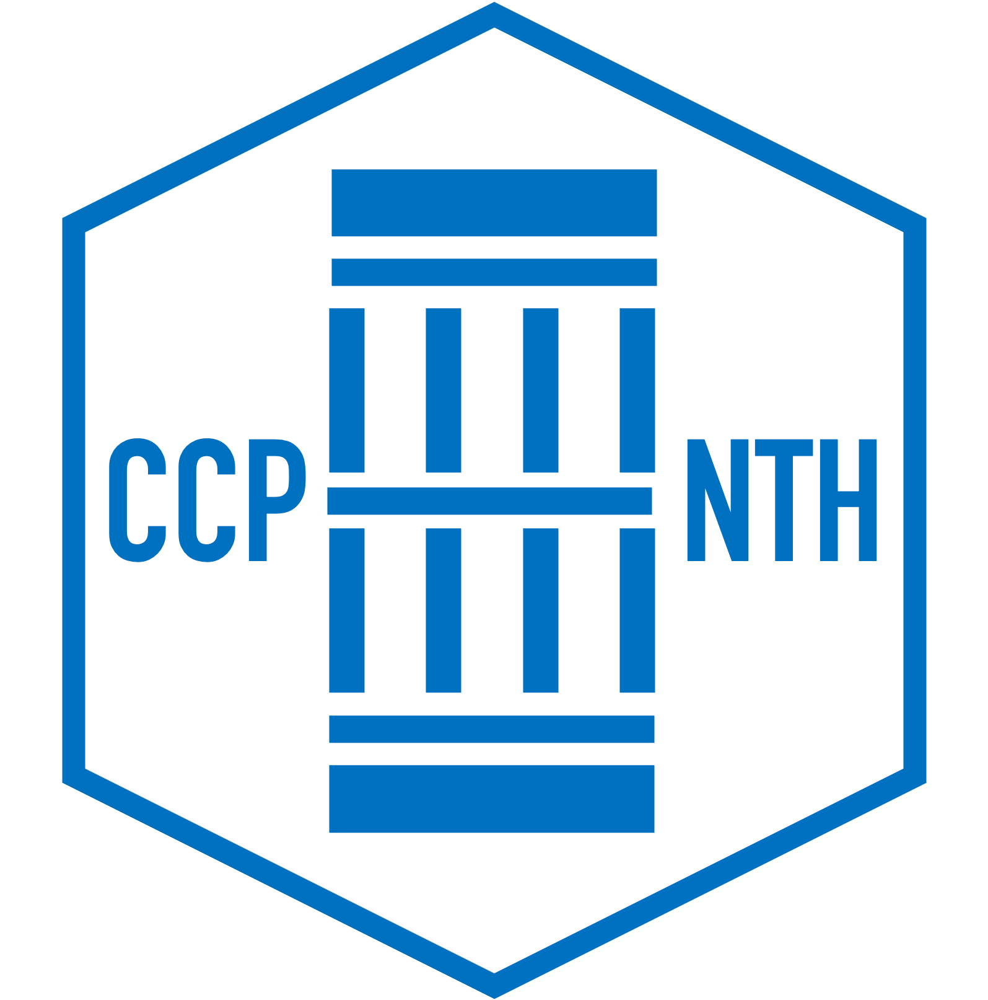

Dates
29–30 June 2026
29–30 June 2026 · Manchester

SIG-NTH / CCP-NTH, University of Manchester
A two-day in-person annual technical meeting bringing together the UK nuclear thermal-hydraulics community, with talks covering community strategy, national nuclear priorities, experimental facilities, industrial applications, data-driven modelling, HPC, fusion and Gen-IV reactor thermal hydraulics.
Dates
29–30 June 2026
Location
Whitworth Art Gallery
Oxford Road, Manchester M15 6ER
Format
In-person
Organisers
SIG-NTH / CCP-NTH, University of Manchester
About the meeting
The CCP/SIG Nuclear Thermal Hydraulics (NTH) Annual Technical Meeting brings together researchers, industry practitioners, government and funding representatives, and the wider nuclear thermal-hydraulics community.
The meeting provides an opportunity to share recent technical progress, discuss UK capability needs, and identify future opportunities in fission, fusion, high-fidelity simulation, experiments, data-driven modelling and software development.
Two-day agenda
Hector Iacovides · The University of Manchester
Round-the-room introductions, 45 seconds per attendee
Chair: Alex Skillen
Community SessionSanjeev Gupta · Framatome
Invited TalkShuisheng He · The University of Sheffield
Wei Wang · UKRI STFC
Daniel Mathers · Executive Director, Nuclear Innovation and Research Office (NIRO)
Sam Mason · Government
Flash TalkMohammad Ferdoosi · The University of Manchester
Walter Villanueva · Bangor University
Brodie Upton · Rolls-Royce PLC
Giovanni Giustini · The University of Manchester
Flash TalkYang Zhang · The University of Sheffield
Flash TalkJeggathishwaran Panisilvam · The University of Sheffield
Christopher Ince · Rolls-Royce PLC
Reuben Petty · The University of Manchester
Borja Diaz-Guardamino Sobrin · The University of Manchester
David Barton · Rolls-Royce PLC
Flash TalkThomas John · Rolls-Royce
Flash TalkOmid Bidar · The University of Sheffield
Andrew Buchan · Queen Mary University of London
Matthew Val Meyers · The University of Manchester
Patricia Silva · The University of Manchester
Flash TalkAfia Masood · Portfolio Manager, UKRI EPSRC
Eric Serre · CNRS M2P2
Invited TalkNick Williams · The University of Manchester
Bo Liu · UKRI STFC
Richard Underhill · Frazer-Nash Consultancy
Invited TalkFacilitator: Michael Bluck
Panellists: Chris Sigournay, Richard Underhill, Shuisheng He, Steve Graham, Michael Bluck, Sanjeev Gupta
PanelShuisheng He · The University of Sheffield
Manchester
The conference, dinner and block-booked accommodation are at three separate locations in Manchester.
Conference Venue
Whitworth Art Gallery Oxford Road Manchester M15 6ER View conference venue on Google MapsConference Dinner
Manchester Museum Via Coupland Street Under the arch on Oxford Road and to the left From 19:00 on 29th June View dinner venue on Google MapsBlock-Booked Accommodation
Premier Inn Manchester City Centre (Princess Street) 2 Brook Street Manchester M1 7BJFor attendees who requested block-booked accommodation for the night of 29 June. Breakfast is included.
View accommodation on Google MapsBefore you attend